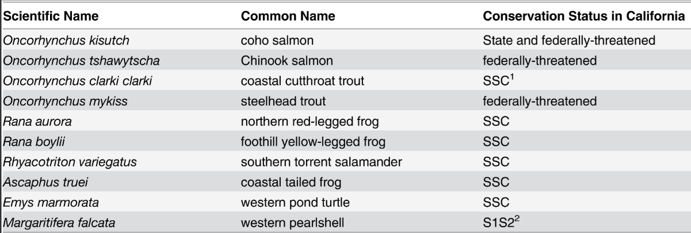

Habitat Loss
The expansion of cannabis farming areas can disrupt natural habitats,
posing threats to local ecosystems and the diverse plant and animal species within them.
- Lots of wildlife that are native to sites where cannabis farms are being built are losing their homes
- Land that is converted into marijuana farms can cause numerous problems for native species, including:
- Nutrient cycling
- Soil destabilization
- Moisture retention
- Migratory animals can face serious problems if parts of their connected habitats are destroyed or severely altered
- The heavy water consummation of the cannabis farming industry takes a toll on local bodies of water where many animals reside
- Many state and federally-threatened species are further eradicated because of this increase in water depletion:

Source
- Additionally, approximately 60% of amphibian species, 16% of reptiles, 34% of birds, and 12% of mammals potentially would be affected by diminished stream flows, according to a 2015 study
- It is important that when creating new cannabis farms, local wildlife are considered before destroying their ecosystems
- This is relevant to all farming, not just marijuana
Back to Main Page